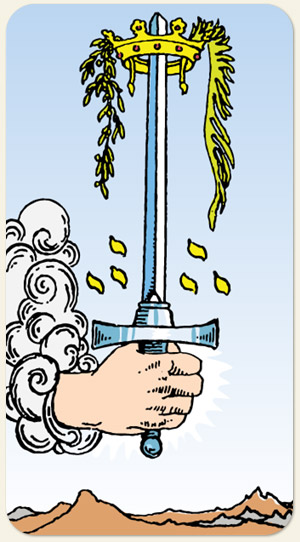

Ás de Espadas
Espada, Coroa, Mão Saindo da Nuvem, Ramos de Oliveira e Palma, Montanha Áridas Yods, Céu Límpido.
Positivo: Ideias novas, pensamento positivo, honra, nobreza, a busca pela razão, comunicação educada e polida.
Negativo: Um princípio que não acontece, ideia que não chega, fogo de palha, comunicação desorganizada, ideias mentirosas ou sem fundamento.
Símbolos: Espada, Coroa, Mão Saindo da Nuvem, Ramos de Oliveira e Palma, Montanha Áridas Yods, Céu Límpido.
Cores: Amarelo, Verde, Azul, Cinza, Branco.